前馈式 3DGS 方法通常继承几何基础模型的 RDNorm(径向距离归一化)空间:它把"重建点到参考相机原点的平均径向距离"归一,却不直接约束相邻高斯中心之间的间距。高斯表面覆盖要求高斯尺度与局部间距相当,而 RDNorm 下跨场景类别的高斯间距中位数实测变化高达 4.5×(原文 Figure 4 图注),导致高斯尺度目标系统性漂移、监督歧义。SplatAnything(InfiniSplat 系列 v3)提出 GSNorm(Gaussian Spacing Normalization):用逐像素深度与焦距算出高斯间距,取场景级中位数作为归一化因子,在高斯预测之前把几何/深度/相机平移重缩放到间距归一空间;配合冻结的 WorldMirror 2.0 几何模型、可微调的高斯骨干、从头训练的轻量 GSHead 与 AnySplat 式 voxel merging,一个模型覆盖物体/人体/室内/街景/航拍/车载环视(Rig-Recon)/360° 全景(Pano-Recon)七类场景。在 7 个 benchmark、4–64 输入视角、含外推视角的系统评测中取得 SOTA(Table 1 的 14 列中 13 列进入前二)。
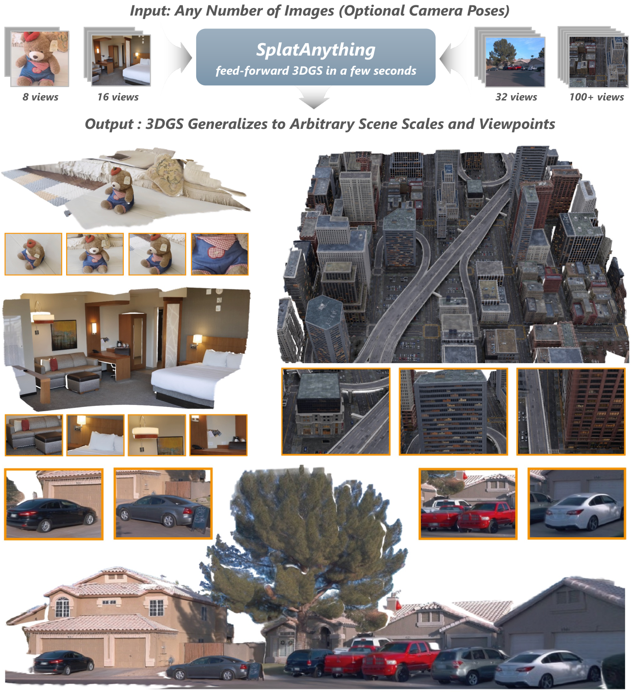
DA3-GS、AnySplat、Mirror2-GS 等直接复用几何骨干的归一化空间。RDNorm 归一的是径向统计量,不约束高斯间距;相似局部观测在不同场景/焦距下对应不同的高斯尺度目标 → 尺度监督歧义。实证:RDNorm 在小物体场景出空洞(holes)、在大室外场景过平滑(over-smoothed)(§4.5 原文)。
QuerySplat 等插值视角渲染强,但大视角外推下学到的高斯几何可靠性下降(§2 原文定位)。
pixelSplat、DepthSplat、ReSplat:几何精度有限,大视角外推成为瓶颈(§2 原文)。
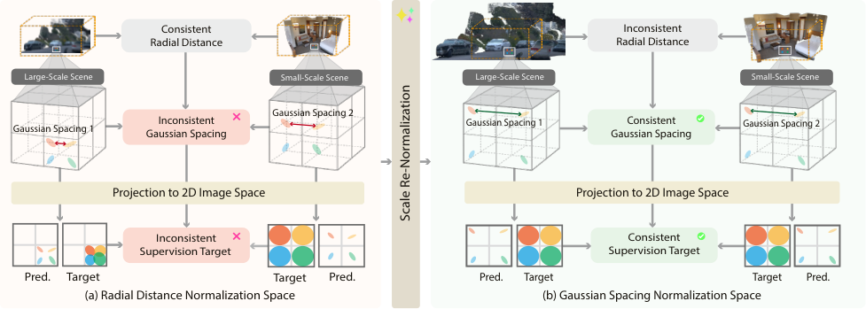
inference.py:33)。docs/inference.md 输出表)。| 符号 | 含义 | 形状/单位 |
|---|---|---|
| $I_i, K_i, (R_i, t_i)$ | 第 $i$ 视角图像 / 内参 / 外参 | $K_i\in\mathbb{R}^{3\times3}$,像素单位 |
| $D_i(\mathbf{u})$ | 像素 $\mathbf{u}=(u,v)$ 处深度 | 标量,几何模型预测 |
| $f_{x,i}, f_{y,i}$ | 焦距(像素单位) | 标量 |
| $\mathbf{P}_i^c(\mathbf{u})$ | 像素反投影的相机系 3D 点 | $[3]$ |
| $d_{x,i}, d_{y,i}, d_i$ | 水平/垂直/几何平均高斯间距 | 标量(式 3/4) |
| $s_r,\ s_g$ | RDNorm / GSNorm 场景级归一化因子 | 标量(式 5/10) |
| $\Omega_i,\ N_p$ | 视角 $i$ 有效像素集合 / 全场景有效像素总数 | 集合 / 标量 |
| $\mu_j,\alpha_j,\Sigma_j,\mathrm{sh}_j$ | 高斯中心 / 不透明度 / 协方差 / SH 系数 | 式 (1) |
| $w_i^p$ | voxel merging 的逐像素权重图 | $[H,W]$,sigmoid(源码 rasterization.py:69) |
训练时(§3.5):预测高斯在 GT 目标位姿下渲染,用 MSE + LPIPS 监督;几何骨干冻结,高斯骨干微调,GSHead 从头训练。
| 输入 | 运算 | 输出 |
|---|---|---|
| 深度图 $D_i$,内参 $K_i$ | 针孔反投影(式 2)+ 局部等深近似 | 间距标量场 $d_i(\mathbf{u})$ |
针孔模型下像素 $\mathbf{u}$ 的反投影点(式 2):
水平相邻像素在局部等深近似下的间距(式 3),垂直方向类似 $d_{y,i}\approx D_i/f_{y,i}$;取几何平均得一阶标量刻画(式 4):
RDNorm 的定义与局限(式 5–7):$s_r$ 是有效像素到参考相机原点的平均径向距离;重缩放后 $d_i^r\approx D_i/(\sqrt{f_xf_y}\,s_r)$——间距仍随 $D_i$ 与焦距变化。机制解释:径向距离是"场景到相机"的全局量,间距是"表面采样密度"的局部量;两者只差一个与观测几何相关的因子,RDNorm 把这个因子留在归一化空间里了。
该模块无直接监督——它是训练前/推理前的坐标空间变换,不产生损失项;其效果通过下游渲染损失间接体现(§12 消融)。
| 输入 | 运算 | 输出 |
|---|---|---|
| 深度 $D_i$、内参 $K_i$(全部视角) | 间距场 → 全场景中位数 → 归一化因子 $s_g$ | 重缩放后的 $D_i^g$、$t_i^g$、$\mathbf{P}_i^g$(式 11) |
对任意场景级尺度 $s>0$,间距变为 $d_i^s(\mathbf{u})\approx D_i(\mathbf{u})/(\sqrt{f_xf_y}\,s)$(式 8)。GSNorm 要求归一化后场景级中位间距为 1(式 9):
为什么用中位数:中位数对正缩放等变(式 9→10 闭式成立),且对深度图中的离群点(天空、错误几何)鲁棒。性质:只归一场景级代表间距,保留局部间距的相对变化——不抹平有意义的局部几何差异。
da3_pose_align_factor 取预测/参考相机中心两两距离之比的中位数(src/models/models/rasterization.py:8-41,移植 DA3 的 Umeyama fallback),深度乘该因子(rasterization.py:113-114);focal = sqrt(fx·fy)(rasterization.py:115);spacing = depth / focal,在有效掩码内取中位数,factor = spacing_target / median(rasterization.py:117-123);rasterization.py:124-126)。spacing_target=0.0013227513(gaussian_worldmirror.py:9 默认值)。即代码用了一个固定常数目标而非 1——归一化空间本身差一个常数因子,与 voxel size(gs_voxel_size=0.002,configs/inference.yaml:14)等超参配套,数学上等价,但复现时不能照抄"归一到 1"。无直接监督(坐标变换);效果由 §12 Table 3/12 消融验证:GSNorm 在所有视角数上一致优于 RDNorm 及其事后校正变体。
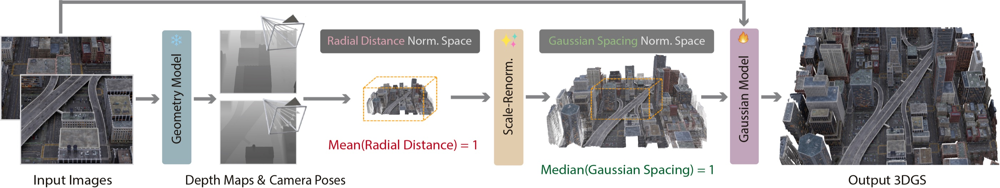
| 组件 | 结构 | 出处 |
|---|---|---|
| 共享 encoder 骨干 | VisualGeometryTransformer:ViT-L/14,embed_dim=1024, depth=24, num_heads=16,patch_embed=dinov2_vitl14_reg,img_size=518,patch=14 | worldmirror_base.py:16-21 |
| 几何分支(冻结) | CameraHead(dim_in=2048)+ DPTHead(output_dim=3,激活 exp+expp1+linear)→ depth/confidence/mask_logits | geometry_worldmirror.py:12-14 |
| GS 特征头 | GSFeatHead:dim_in=2048,features=256,out_channels=[256,512,1024,1024],DPT 式 4 层 scratch 融合 + 位置嵌入(ratio=0.1) | gs_head.py:17,86-93 |
| 高斯解码头 | DPTDecoder:Conv2d(128→256,3×3)+ReLU+Conv2d(256→12,1×1),输出 12 通道 = 4 quat + 3 scale + 1 opacity + 3 residual SH + 1 weight | rasterization.py:48-60 |
| 激活函数 | scale:exp().clamp_max(0.3);quat:归一化;opacity:sigmoid;SH:(rgb-0.5)/0.282+residual(仅 DC);weight:sigmoid | rasterization.py:66-69(对应论文式 17/18) |
inference.py:155);decode_chunk_size=8 分块解码(gaussian_worldmirror.py:10);dense decoder 与激活用 FP32(关 autocast,gaussian_worldmirror.py:31)。GSHead 的输出由渲染损失间接监督(MSE+LPIPS,§8);几何教师无梯度流动(冻结,inference.py:150 requires_grad_(False))。
| 输入 | 运算 | 输出 |
|---|---|---|
| 逐视角高斯(means/quats/scales/opacities/sh/weights) | 体素栅格化 + 权重加权合并 | 统一场景 $\mathcal{G}$ |
体素索引 floor(means / voxel_size),同体素高斯按权重 $w$ 合并:means/quats/scales/sh 为加权平均 $\Sigma wx/\Sigma w$(四元数合并后重新归一化);不透明度是特例——源码注释明确 opacity = sum(w*w)/sum(w)(rasterization.py:183),即合并时不使用逐像素预测的 opacity,而是由合并权重自身算出(rasterization.py:184 values = weights if name == 'opacities')。注释称这是 "the trained configuration's merge rule",即训练时网络已学会让 $w$ 承担不透明度角色。voxel size 归一化空间内 0.002(configs/inference.yaml:14,类默认 0.0018,gaussian_worldmirror.py:10)。
max_scale_pct=99.8(configs/inference.yaml:13;注意 docs/inference.md 表格写 99.5,与 yaml 不一致,⚠️【待核实】以 yaml/代码为准);飞点过滤默认关;天空过滤需 --sky_seg(U²-Net ONNX,320×320);opacity_thresh=0.05 过滤(inference.yaml:7)。无直接监督。论文定位:"GSNorm and voxel merging address two complementary sources of scale variation"(A.4)——GSNorm 管跨场景代表尺度,voxel merging 管多视角累积的密度冗余;merging 机制沿用 AnySplat,非本文创新。
全文仅两项损失(§3.5,式 13/14),无深度/法线/位姿辅助损失:
| 损失项 | 公式 | 权重(真值) | 作用 |
|---|---|---|---|
| MSE | 渲染目标视角 vs GT 的像素 MSE | $\lambda=1$(§3.5 原文) | 重建保真 |
| LPIPS | 感知损失 | $\lambda=1$ | 感知质量 |
渲染目标:训练时用 GT 目标位姿渲染预测高斯(A.4 coordinate alignment:预测轨迹与 GT 轨迹的 pairwise baseline 之比取中位数做全局尺度对齐,pose-free 与 pose-conditioned 两种变体都应用)。
--mode rgb):相机由几何模型预测;pose 模式(--mode pose):读 prior_camera.json,cond_flags=[1,0,1](位姿+光线条件,inference.py:141)。--no_cam_align 可关,docs/inference.md:28)。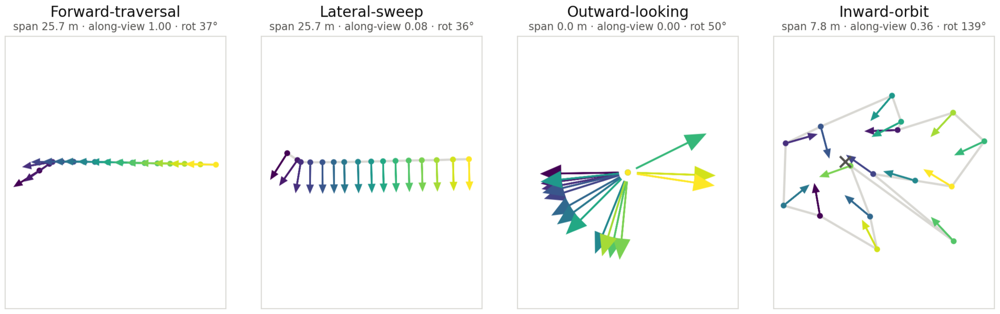
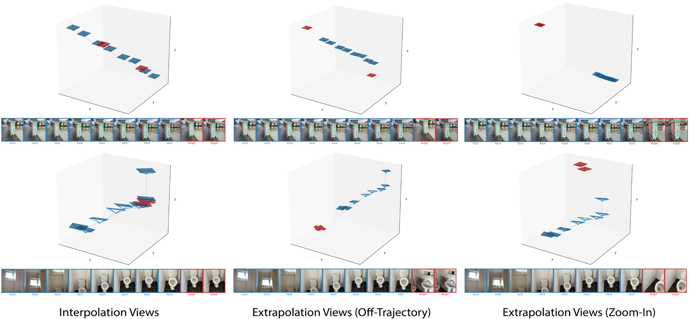
| 项 | 值 | 出处 |
|---|---|---|
| 发布内容 | 仅推理(inference-only release,各模型文件头注释);无训练代码 | gs_head.py:1 等 |
| 权重 | SplatAnything.ckpt(stage-1 高斯学生)+ worldmirror2.safetensors(HF: ritianyu/SplatAnything)+ skyseg.onnx(可选) | README / checkpoints/README.md |
| 依赖 | Python 3.10+,PyTorch ≥2.4,<3;numpy <2;opencv <4.12;onnxruntime(仅天空分割) | requirements.txt / README |
| 许可证 | PRL v1.0(非 OSI 标准):研究/教育/个人免费;组织性"项目使用"无论商用与否均需 Google 表单登记(自动批准) | License.txt |
| 超参 | 值 |
|---|---|
| 迭代数 / 硬件 | 20,000 步 / 64×NVIDIA H20 |
| 输入视角数 | 4–32(训练中动态) |
| 输入分辨率 | 动态 504–1024(推理默认 756×756,14 的倍数) |
| 学习率 | Gaussian Backbone 5×10⁻⁶,GSHead 2×10⁻⁵,500 步 warm-up;优化器原文未提及⚠️【待核实】 |
| 训练数据 | 14 数据集(8 合成 20,769 场景 + 6 真实 5,026 场景,合计 25,795——合计为笔记计算,Table 4 只给分项):HyperSim/UnrealStereo4K/OmniObject3D/Rawmantic3D/OmniWorld/GTA-SfM/MatrixCity/TartanGround + ScanNet++/Matterport3D/ARKitScenes/Taskonomy/MapFree/BlendedMVS |
spacing_target=0.0013227513(gaussian_worldmirror.py:9)——不是论文式(9)的 1;配套 voxel size 0.002 也在同一归一化空间。复现时整套常数必须一起搬。inference.py:146-150 分别加载两个权重),推理跑两遍大 backbone——这是 Table 11 里它比 Mirror2-GS 慢(~411ms vs 246ms @4 视角)的直接原因【推测:单遍共享 encoder 可省一半 backbone 耗时】。da3_pose_align_factor(rasterization.py:8-41)移植 DA3 的 Umeyama fallback,取相机中心两两距离比的中位数;零基线(全景/立方图)场景自动退化为不缩放——这是 Pano-Recon 能 work 的关键细节。--sky_seg 时天空像素不仅被过滤,还被排除在 GSNorm 中位数统计之外(rasterization.py:135-140 注释 "sky masks also exclude sky pixels from scale estimation",docs/inference.md:34)。max_scale_pct 默认 99.5,configs/inference.yaml:13 实为 99.8。| 设定 | 方法 | ScanNet D/L | NRGBD D/L | DL3DV D/L | T&T D/L | Mip360 D/L | ETH3D D/L | DTU D/L |
|---|---|---|---|---|---|---|---|---|
| w/o Pose | AnySplat | 0.278/0.414 | 0.236/0.352 | 0.371/0.327 | 0.593/0.737 | 0.538/0.787 | 0.278/0.154 | 0.520/0.810 |
| DA3-GS | 0.286/0.305 | 0.233/0.217 | 0.337/0.228 | 0.414/0.380 | 0.371/0.565 | 0.228/0.087 | 0.365/0.582 | |
| Mirror2-GS | 0.193/0.222 | 0.235/0.237 | 0.246/0.188 | 0.306/0.351 | 0.283/0.528 | 0.205/0.070 | 0.347/0.617 | |
| QuerySplat | 0.236/0.242 | 0.261/0.216 | 0.343/0.291 | 0.425/0.393 | 0.412/0.652 | 0.290/0.031 | 0.424/0.676 | |
| Ours | 0.184/0.207 | 0.195/0.183 | 0.221/0.156 | 0.252/0.299 | 0.233/0.463 | 0.147/0.049 | 0.229/0.483 | |
| Ours (Pose Cond.) | 0.185/0.206 | 0.186/0.162 | 0.215/0.148 | 0.251/0.290 | 0.219/0.440 | 0.133/0.037 | 0.184/0.364 |
完整表含 w/ Pose 组(DepthSplat/TokenGS/tttLRM/ReSplat/DA3-GS/Mirror2-GS 的 pose-conditioned 变体),全部数字已核对原文 Table 1。加粗为该列最优;Ours 与 Ours (Pose Cond.) 占据 13/14 列前二。
| 方法 | N=4 | N=8 | N=16 | N=32 | N=64 |
|---|---|---|---|---|---|
| Mirror2-GS(w/o pose 最快) | 246 | 448 | 959 | 2,268 | 6,060 |
| Ours | 411 | 761 | 1,649 | 3,991 | 11,037 |
| DA3-GS | 709 | 1,513 | 3,783 | 10,950 | 35,904 |
| QuerySplat | 2,324 | 3,398 | 6,092 | 14,009 | 39,583 |
| DepthSplat(w/ pose 最快) | 158 | 287 | 541 | 1,045 | 2,087 |
| 方法 | ScanNet D/L | DL3DV D/L | Mip360 D/L | DTU D/L |
|---|---|---|---|---|
| SHARP | 0.223/0.244 | 0.335/0.280 | 0.328/0.505 | 0.433/0.724 |
| InfiniSplat(v1/v2 系) | 0.266/0.280 | 0.527/0.596 | 0.505/0.654 | 0.562/0.754 |
| Ours | 0.238/0.274 | 0.279/0.220 | 0.410/0.599 | 0.327/0.657 |
单目下与 SHARP 互有胜负(本文 DL3DV/DTU 明显更强,ScanNet/Mip360 输);大幅优于 InfiniSplat。单目不是本文主战场。
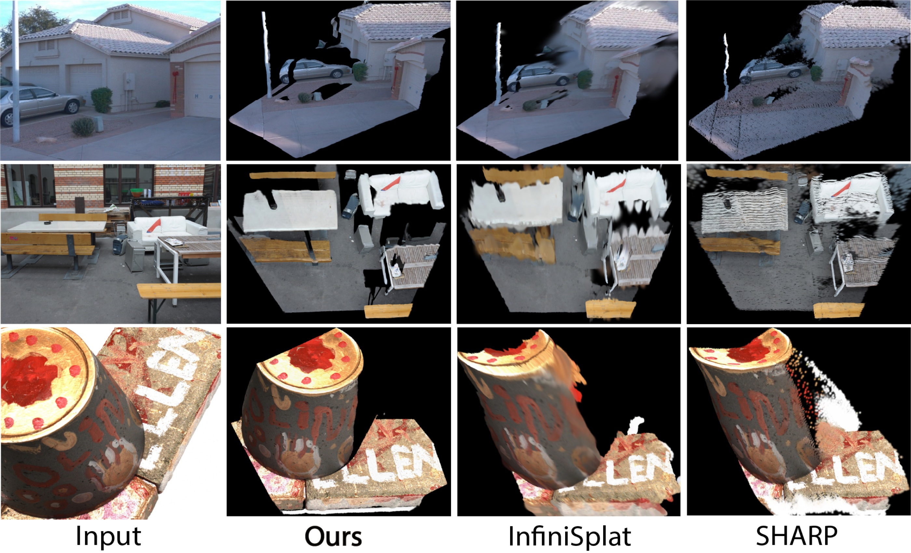
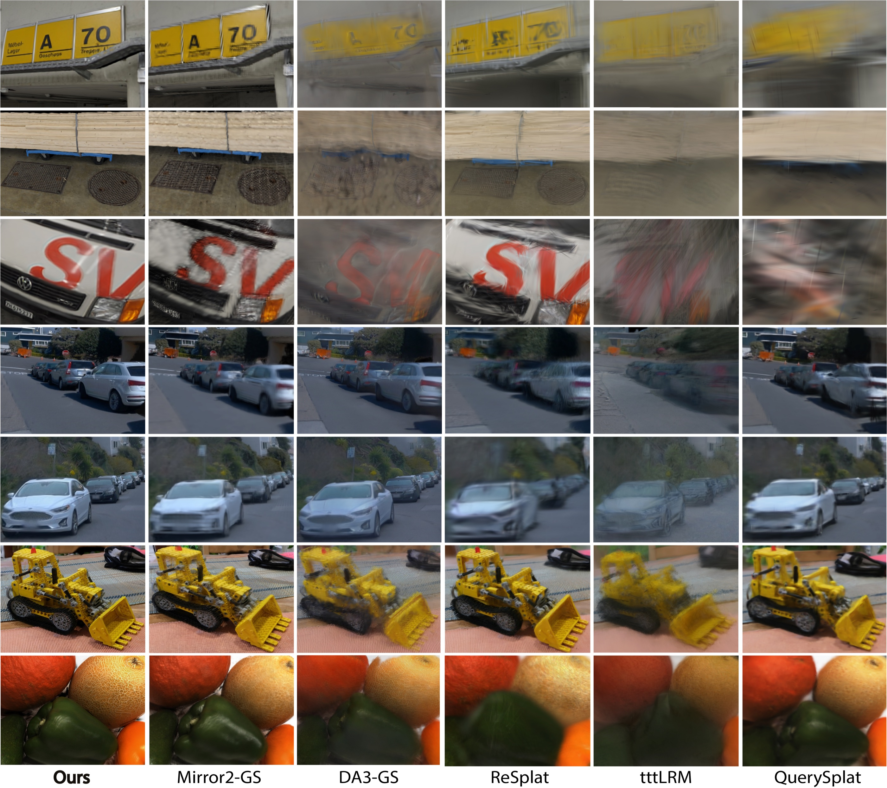
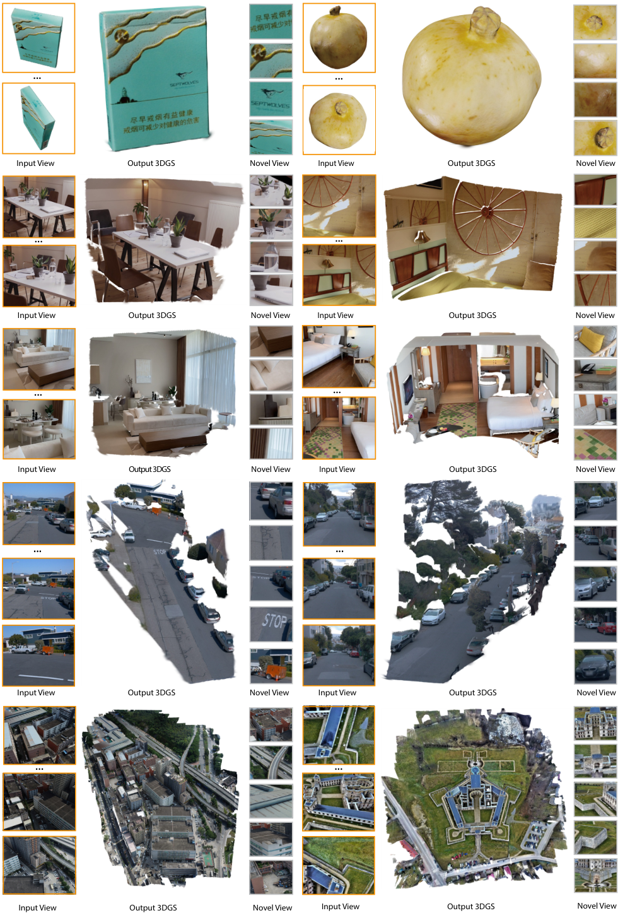
| 归一化空间 | V=1 D/L | V=4 D/L | V=16 D/L | V=64 D/L |
|---|---|---|---|---|
| RDNorm | 0.308/0.394 | 0.223/0.278 | 0.218/0.268 | 0.224/0.250 |
| RDNorm + 事后尺度校正 | 0.323/0.400 | 0.249/0.309 | 0.245/0.300 | 0.234/0.265 |
| Camera Distance Norm.(A.8) | 0.793/1.027 | 0.217/0.284 | 0.214/0.280 | 0.224/0.260 |
| Depth Norm.(A.8) | 0.307/0.413 | 0.224/0.284 | 0.218/0.273 | 0.224/0.254 |
| GSNorm(Ours) | 0.294/0.367 | 0.198/0.245 | 0.190/0.232 | 0.217/0.229 |
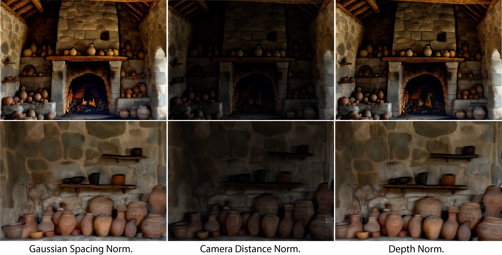
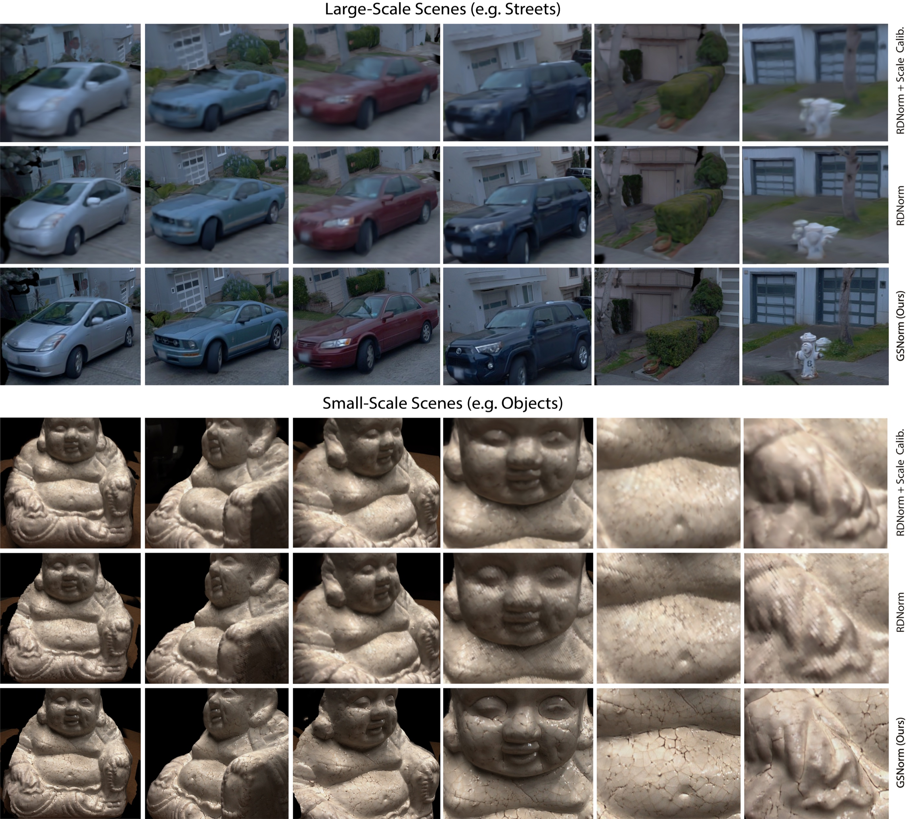
| 变体 | V=4 D/L | V=16 D/L | V=64 D/L |
|---|---|---|---|
| w/o 微调高斯骨干 | 0.2026/0.2503 | 0.1948/0.2379 | 0.2239/0.2387 |
| w/o 固定高斯中心 | 0.2063/0.2591 | 0.1981/0.2463 | 0.2259/0.2507 |
| w/o 数据扩展(仅 HyperSim) | 0.2045/0.2499 | 0.1960/0.2389 | 0.2229/0.2385 |
| w/o 混合视角采样 | 0.2026/0.2536 | 0.1928/0.2392 | 0.2231/0.2448 |
| 完整模型 | 0.1981/0.2450 | 0.1895/0.2315 | 0.2170/0.2285 |
原文结论:固定高斯中心收益最大且最一致——若中心可经渲染损失优化,模型会把基元移离几何先验以降低图像误差,导致几何漂移与外推泛化变差。这与 InfiniSplat v2 发现的"位置补偿属性旁路"是同一族问题:v2 靠冻结几何分支 + GT 位姿反投影解决,v3 靠固定中心解决。
| 方法 | 年份 | 输入假设 | 场景表示 | 监督信号 | 训练数据 | 训练时长 | 推理耗时(N=4) | 显存 | 关键指标(7 数据集均值 D/L,w/o pose) | 开源 |
|---|---|---|---|---|---|---|---|---|---|---|
| SplatAnything | 2026 | N 视角 RGB(可选 pose) | 逐像素 3DGS | 渲染 MSE+LPIPS | 14 数据集 25,795 场景 | 20k 步 / 64×H20 | 411ms(H20) | —(未报告) | 0.209/0.263(笔记按 Table 1 七数据集手算均值) | 推理+权重(PRL 许可) |
| AnySplat | 2025 | N 视角 RGB | 逐像素 3DGS | — | — | — | 250ms | — | 0.402/0.512(手算均值) | — |
| DA3-GS(基于 DA3) | 2025 | N 视角 RGB | 逐像素 3DGS | — | — | — | 709ms | — | 0.319/0.338(手算均值) | 开源 |
| Mirror2-GS(WorldMirror 2.0) | 2026 | N 视角 RGB | 逐像素 3DGS | — | — | — | 246ms(最快) | — | 0.259/0.316(手算均值) | — |
| QuerySplat | 2026 | 2–300 未标定视角 | 查询 slot 3DGS | — | — | — | 2,324ms | — | 0.342/0.357(手算均值) | 推理开源 |
| ReSplat | 2025 | N 视角 + pose | 逐像素 3DGS+渲染优化 | — | — | — | 199ms | — | w/ pose 组;PSNR 最高但外推伪影(A.5) | — |
| SHARP | 2025 | 单目 | 单目 NVS | — | — | — | — | — | 单目设定互有胜负(§11.4) | 开源 |
| InfiniSplat v2 | 2026 | 单目/稀疏视角 | 逐像素 3DGS | 渲染(冻结 DA3 几何) | Hypersim/Raw3D/ScanNet++ | — | — | — | 单目设定输本文(Table 2) | 推理+权重 |
均值列为本笔记按原文 Table 1 逐格手算(7 数据集 DISTS/LPIPS 算术平均),非原文给出;"—"为论文/库内笔记未提供。
| 范式 | 代表方法 | 核心先验 | 局限 |
|---|---|---|---|
| 逐场景优化 3DGS | 原版 3DGS | 每场景拟合 | 慢,需密集视角 |
| 前馈重建(无几何先验) | pixelSplat / tttLRM / TokenGS / QuerySplat | 学习到的多视图先验 | 大视角外推几何不可靠 |
| 几何基础模型 + RDNorm | AnySplat / DA3-GS / Mirror2-GS | 径向尺度归一 | 高斯间距漂移 → 尺度监督歧义 |
| 几何基础模型 + GSNorm(本文) | SplatAnything | 间距尺度归一 + 固定中心 | 依赖几何先验质量;未观测区域空洞;非最快 |
系列脉络:InfiniSplat(v1,单目 NVS)→ v2(冻结 DA3 几何 + GT 位姿反投影,解决属性学习退化)→ v3(SplatAnything)(换 WorldMirror 2.0 几何 + GSNorm,解决跨场景尺度一致性)。三篇是同一团队对"前馈 3DGS 属性学习"问题的递进拆解,库内 前馈式高斯重建 2026 下半年调研 可同步补 v3 一行。
scripts/convert_panorama.py)→ 同一推理入口;A.9 用 WorldPano 生成全景,95°×100° FoV 立方图视角直接喂入。零基线场景下 da3_pose_align_factor 自动跳过重缩放(rasterization.py:30-34),这是全景能 work 的关键。| 环节 | 适配性 | 说明 |
|---|---|---|
| scene_gs(背景/场景重建) | ✅ 高度相关 | COLMAP → 前馈 3DGS 的替代/初始化方案;pose 模式可直接吃 COLMAP 位姿(prior_camera.json)。GSNorm 对"场景尺度差异大"的序列尤其对症。 |
| head_gs / body_gs(3DMM 拟合) | ❌ 不适用 | 冻结几何 + 固定高斯中心,无法"改几何";与 InfiniSplat v2 笔记 §15 同一结论:这类方法适合场景,不适合人头/身体的 3DMM 对齐环节。 |
| 尺度归一化方法论 | ✅ 可借鉴 | GSNorm 思想(间距而非径向距离做尺度参考)可直接用于我们自研 3DGS 的尺度处理;head/body/scene 三分后尺度差异大,间距归一比径向归一更合理。 |
| 人体场景 | ⚠️ 弱相关 | 训练数据 OmniObject3D 含物体、Rawmantic3D 等含少量人体,但无人体专项数据集; teaser 有人体案例但非 benchmark 项。 |
几何教师与高斯学生各持独立 ViT-L(inference.py:146-150),同一场景 backbone 跑两遍。这是它比 Mirror2-GS 慢 1.7× 的直接原因。建议:共享 encoder 一次前向、双头输出;或蒸馏学生 encoder。预期 N=4 耗时可从 411ms 降到 ~250ms 量级【推测,按 backbone 占比估算】。
发布为 inference-only(gs_head.py:1 文件头),GSNorm 的 spacing_target=0.0013227513、voxel size 0.002 等常数与论文"归一到 1"的表述脱节,且 docs 与 yaml 的 max_scale_pct(99.5 vs 99.8)不一致。建议:社区复现需以代码常数为准;作者应发布训练代码或至少把归一化常数的推导写进论文。
论文自认(§5):"may degrade when reliable geometry cannot be recovered from extremely sparse or challenging inputs"。Table 2 单目输 SHARP 于 ScanNet/Mip360。建议:几何置信度(confidence 头已有,geometry_worldmirror.py:22)可用于自适应降权低置信区域,或接入生成式补全(作者 future work 同向)。
式(3)假设 $D_i(\mathbf{u}+\mathbf{e}_x)\approx D_i(\mathbf{u})$,深度边缘的间距估计偏大;filter_flying_points_infer 选项(默认关)正是为此准备但默认不启用。建议:边缘感知的中位数统计(按深度分位数加权)或默认开启飞点过滤。
主指标 DISTS/LPIPS 沿用 SHARP 口径,PSNR 放附录且非最优(ReSplat 更高);效率对比避谈 Mirror2-GS 更快。建议:读论文时把 Table 10(PSNR)与 Table 11(延迟)一起当作主表看。
A.5 表号引用("Table 7, Table 7, Table 7, Table 10, Table 10")、4.2 节单目表号(Table 6 应为 Table 2)、A.8/A.9 共用 Fig.13——均已核对原文,属笔误非内容错误。
| 优先级 | 改进点 | 性质 |
|---|---|---|
| [高] | 双 encoder 合并 | 性能(推理耗时) |
| [高] | 训练代码/归一化常数公开 | 可复现性 |
| [中] | 几何置信度自适应 | 鲁棒性 |
| [中] | 深度边缘的间距统计 | 方法层面 |
| [低] | 评估口径 | 社区阅读防偏 |
| [低] | 编号笔误 | 编辑质量 |
个人认为最关键的三点:① 双 encoder 是纯工程浪费,合并后性价比极高;② "归一到 1 vs 0.00132"这类常数脱节是复现的头号坑;③ 几何置信度头已经存在但没被用起来——低置信区域降权是最低垂的鲁棒性果实。
SplatAnything 是 InfiniSplat 系列从"单目 NVS"走向"通用前馈 3DGS"的第三步,核心贡献单一而扎实:把归一化参考系从径向距离换成高斯间距。消融证据链完整(事后校正更差 → 问题在预测空间;CDNorm/DNorm 各有失效模式 → 间距统计量选得对),7 数据集 + 外推 benchmark 全面 SOTA(除 ETH3D LPIPS 与 PSNR 口径)。它不是最快的(Mirror2-GS/DepthSplat 更快),也不解决几何先验本身的失败,但作为"几何基础模型 + 前馈 3DGS"范式的空间标准化一环,方法论价值高于指标价值——后续工作(包括我们自己的 pipeline)在设计跨场景尺度处理时,GSNorm 是比 RDNorm 更合理的默认选择。
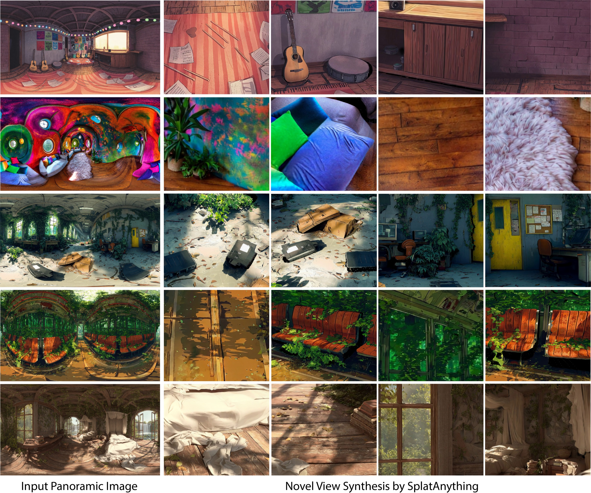
Hao Yu(浙大/腾讯混元)· Zhenwei Wang(腾讯混元)· Yongzhen Hu(浙大)· Yuning Gong / Junta Wu / Tengfei Wang(通讯)/ Chunchao Guo(通讯)(腾讯混元)· Xiaowei Zhou / Hujun Bao(浙大)· Sida Peng(浙大/Causa Robotics)。InfiniSplat 系列原班人马(v1/v2 作者 Hu/Yu/Peng 均在)。